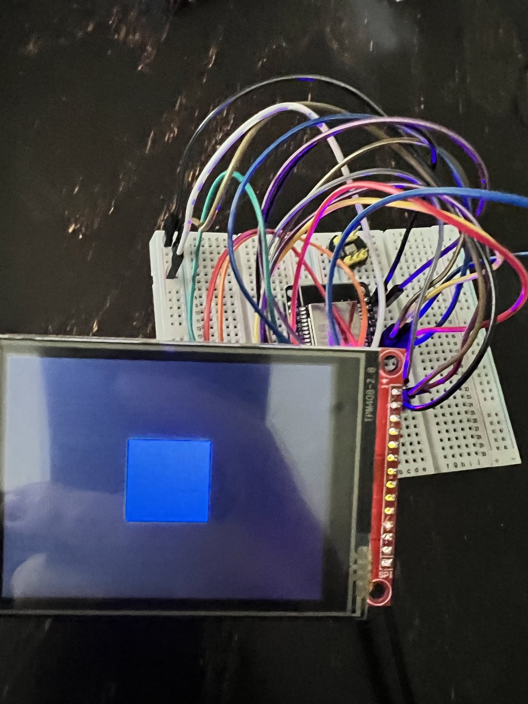

01
STAGE 01 · DISPLAY BRING-UP
Prove the screen before anything else
Nothing else can be debugged until you can see something. The first milestone was getting the ILI9341 driven over SPI — wiring the four control lines, sorting out the chip-select and reset pins, and drawing a single filled rectangle.
A blue square is a deliberately boring target, and that is the point: it confirms the SPI bus, the pin mapping, the supply rail, and the display initialization sequence are all correct in one shot. Once the rectangle rendered, every later bug had a known-good foundation underneath it.
- SPI VERIFIED
- PIN MAP LOCKED
- 3.3 V RAIL OK
